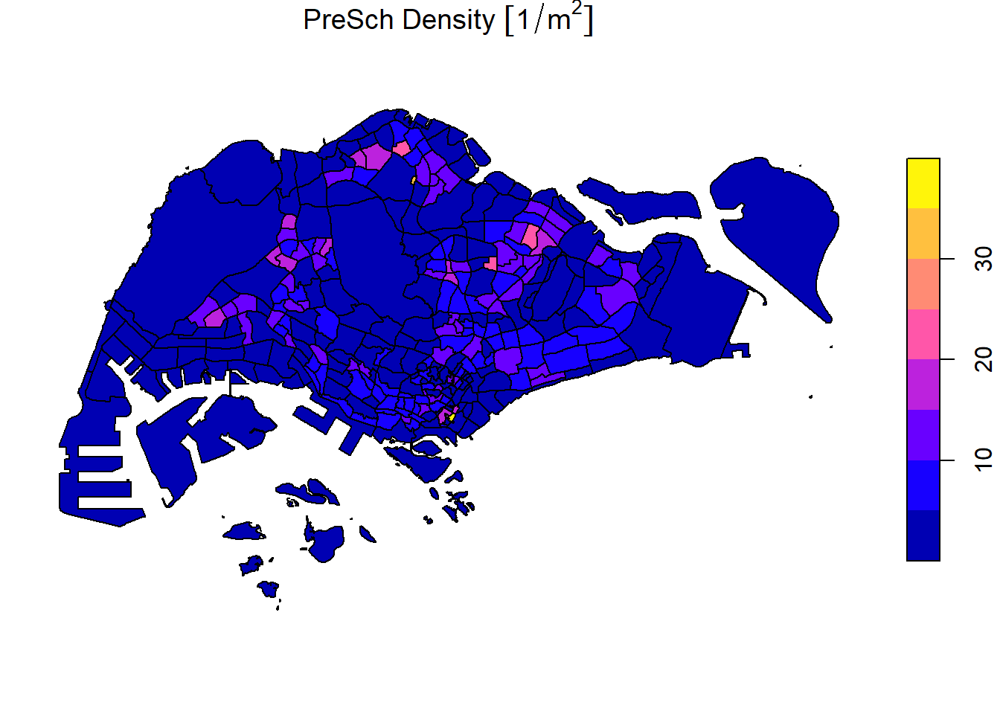
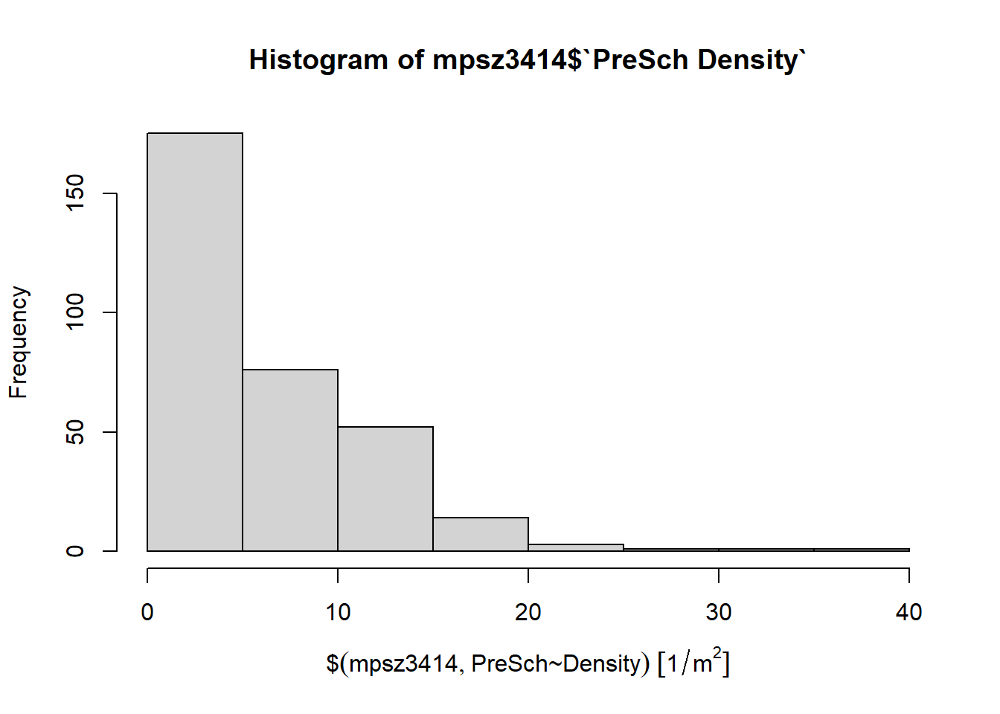
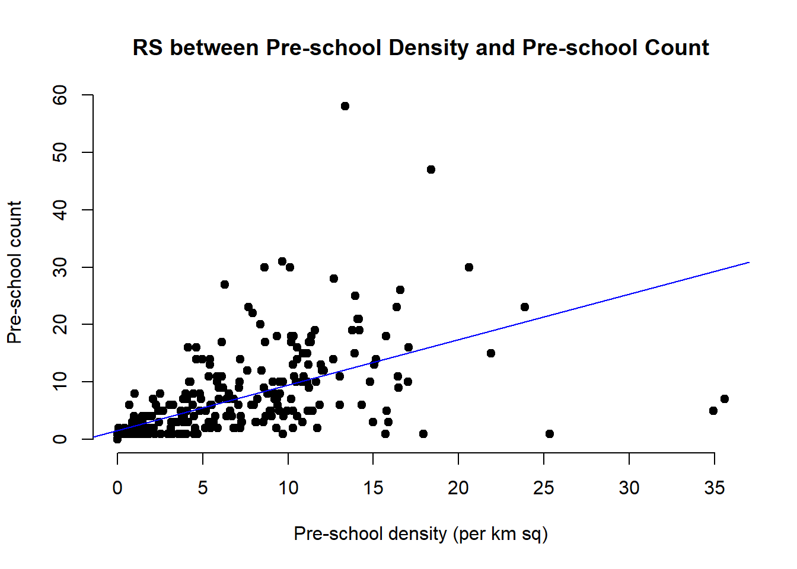

pacman::p_load(sf, tidyverse,readr,readxl,tidyr,dplyr,ggplot2)Hands-On Ex02
Getting Started
List of packages will be used.
Importing Geospatial Data
- MP14_SUBZONE_WEB_PL, a polygon feature layer in ESRI shapefile format
mpsz = st_read(dsn = "data/geospatial", layer = "MP14_SUBZONE_WEB_PL")Reading layer `MP14_SUBZONE_WEB_PL' from data source
`C:\yifei-alpaca\IS415-GAA\handson_ex\handson_ex02\data\geospatial'
using driver `ESRI Shapefile'
Simple feature collection with 323 features and 15 fields
Geometry type: MULTIPOLYGON
Dimension: XY
Bounding box: xmin: 2667.538 ymin: 15748.72 xmax: 56396.44 ymax: 50256.33
Projected CRS: SVY21- CyclingPath, a line feature layer in ESRI shapefile format
cyclingpath = st_read(dsn = "data/geospatial",
layer = "CyclingPathGazette")Reading layer `CyclingPathGazette' from data source
`C:\yifei-alpaca\IS415-GAA\handson_ex\handson_ex02\data\geospatial'
using driver `ESRI Shapefile'
Simple feature collection with 2248 features and 2 fields
Geometry type: MULTILINESTRING
Dimension: XY
Bounding box: xmin: 11854.32 ymin: 28347.98 xmax: 42626.09 ymax: 48948.15
Projected CRS: SVY21- PreSchool, a point feature layer in kml file format.
preschool = st_read("data/geospatial/pre-schools-location-kml.kml")Reading layer `PRESCHOOLS_LOCATION' from data source
`C:\yifei-alpaca\IS415-GAA\handson_ex\handson_ex02\data\geospatial\pre-schools-location-kml.kml'
using driver `KML'
Simple feature collection with 1925 features and 2 fields
Geometry type: POINT
Dimension: XYZ
Bounding box: xmin: 103.6824 ymin: 1.247759 xmax: 103.9897 ymax: 1.462134
z_range: zmin: 0 zmax: 0
Geodetic CRS: WGS 84Plotting the Geospatial Data
plot(mpsz)
Plot only the geometry.
plot(st_geometry(mpsz))
Plot using specific attribute.
plot(mpsz["PLN_AREA_N"])
Working with Projection
Change EPSG code from 9001
st_crs(mpsz)Coordinate Reference System:
User input: SVY21
wkt:
PROJCRS["SVY21",
BASEGEOGCRS["SVY21[WGS84]",
DATUM["World Geodetic System 1984",
ELLIPSOID["WGS 84",6378137,298.257223563,
LENGTHUNIT["metre",1]],
ID["EPSG",6326]],
PRIMEM["Greenwich",0,
ANGLEUNIT["Degree",0.0174532925199433]]],
CONVERSION["unnamed",
METHOD["Transverse Mercator",
ID["EPSG",9807]],
PARAMETER["Latitude of natural origin",1.36666666666667,
ANGLEUNIT["Degree",0.0174532925199433],
ID["EPSG",8801]],
PARAMETER["Longitude of natural origin",103.833333333333,
ANGLEUNIT["Degree",0.0174532925199433],
ID["EPSG",8802]],
PARAMETER["Scale factor at natural origin",1,
SCALEUNIT["unity",1],
ID["EPSG",8805]],
PARAMETER["False easting",28001.642,
LENGTHUNIT["metre",1],
ID["EPSG",8806]],
PARAMETER["False northing",38744.572,
LENGTHUNIT["metre",1],
ID["EPSG",8807]]],
CS[Cartesian,2],
AXIS["(E)",east,
ORDER[1],
LENGTHUNIT["metre",1,
ID["EPSG",9001]]],
AXIS["(N)",north,
ORDER[2],
LENGTHUNIT["metre",1,
ID["EPSG",9001]]]]to 3414
mpsz3414 <- st_transform(mpsz, 3414)st_crs(mpsz3414)Coordinate Reference System:
User input: EPSG:3414
wkt:
PROJCRS["SVY21 / Singapore TM",
BASEGEOGCRS["SVY21",
DATUM["SVY21",
ELLIPSOID["WGS 84",6378137,298.257223563,
LENGTHUNIT["metre",1]]],
PRIMEM["Greenwich",0,
ANGLEUNIT["degree",0.0174532925199433]],
ID["EPSG",4757]],
CONVERSION["Singapore Transverse Mercator",
METHOD["Transverse Mercator",
ID["EPSG",9807]],
PARAMETER["Latitude of natural origin",1.36666666666667,
ANGLEUNIT["degree",0.0174532925199433],
ID["EPSG",8801]],
PARAMETER["Longitude of natural origin",103.833333333333,
ANGLEUNIT["degree",0.0174532925199433],
ID["EPSG",8802]],
PARAMETER["Scale factor at natural origin",1,
SCALEUNIT["unity",1],
ID["EPSG",8805]],
PARAMETER["False easting",28001.642,
LENGTHUNIT["metre",1],
ID["EPSG",8806]],
PARAMETER["False northing",38744.572,
LENGTHUNIT["metre",1],
ID["EPSG",8807]]],
CS[Cartesian,2],
AXIS["northing (N)",north,
ORDER[1],
LENGTHUNIT["metre",1]],
AXIS["easting (E)",east,
ORDER[2],
LENGTHUNIT["metre",1]],
USAGE[
SCOPE["Cadastre, engineering survey, topographic mapping."],
AREA["Singapore - onshore and offshore."],
BBOX[1.13,103.59,1.47,104.07]],
ID["EPSG",3414]]Transforming the projection of preschool from wgs84 to svy21.
preschool3414 <- st_transform(preschool,
crs = 3414)Check:
st_geometry(preschool3414)Geometry set for 1925 features
Geometry type: POINT
Dimension: XYZ
Bounding box: xmin: 11203.01 ymin: 25596.33 xmax: 45404.24 ymax: 49300.88
z_range: zmin: 0 zmax: 0
Projected CRS: SVY21 / Singapore TM
First 5 geometries:Importing aspatial data
read in csv file (rmb not to push the csv raw data file to github)
listings <- read.csv("data/aspatial/listings.csv", sep=',')%>% is call the “pipe” operator. It is used to perform multiple functions.
listings_sf <- st_as_sf(listings,
coords = c("longitude", "latitude"),crs=4326) %>%
st_transform(crs = 3414)glimpse(listings_sf)Rows: 4,161
Columns: 17
$ id <dbl> 50646, 71609, 71896, 71903, 275344, 289…
$ name <chr> "Pleasant Room along Bukit Timah", "Ens…
$ host_id <int> 227796, 367042, 367042, 367042, 1439258…
$ host_name <chr> "Sujatha", "Belinda", "Belinda", "Belin…
$ neighbourhood_group <chr> "Central Region", "East Region", "East …
$ neighbourhood <chr> "Bukit Timah", "Tampines", "Tampines", …
$ room_type <chr> "Private room", "Private room", "Privat…
$ price <int> 80, 145, 85, 85, 49, 184, 79, 49, 55, 5…
$ minimum_nights <int> 92, 92, 92, 92, 60, 92, 92, 60, 60, 60,…
$ number_of_reviews <int> 18, 20, 24, 47, 14, 12, 133, 17, 12, 3,…
$ last_review <chr> "2014-12-26", "2020-01-17", "2019-10-13…
$ reviews_per_month <dbl> 0.18, 0.15, 0.18, 0.34, 0.11, 0.10, 1.0…
$ calculated_host_listings_count <int> 1, 6, 6, 6, 44, 6, 7, 44, 44, 44, 6, 7,…
$ availability_365 <int> 365, 340, 265, 365, 296, 285, 365, 181,…
$ number_of_reviews_ltm <int> 0, 0, 0, 0, 1, 0, 0, 3, 2, 0, 1, 0, 0, …
$ license <chr> "", "", "", "", "S0399", "", "", "S0399…
$ geometry <POINT [m]> POINT (22646.02 35167.9), POINT (…Buffering
nQuadSegs refers to how many segments are generated per quadrant and features. Distance is in meters.
buffer_cycling <- st_buffer(cyclingpath,
dist=5, nQuadSegs = 30)calculating the area
buffer_cycling$AREA <- st_area(buffer_cycling)sum() the total are
sum(buffer_cycling$AREA)1556978 [m^2]Point in polygon count
mpsz3414$`PreSch Count`<- lengths(st_intersects(mpsz3414, preschool3414))summary(mpsz3414$`PreSch Count`) Min. 1st Qu. Median Mean 3rd Qu. Max.
0.00 0.00 3.00 5.96 9.00 58.00 *Note that the count is slightly different from the website. I believed that it is due to the difference in number of rows in the dataset. Currently there is 1925 rows.
top_n(mpsz3414, 1, `PreSch Count`)Simple feature collection with 1 feature and 16 fields
Geometry type: MULTIPOLYGON
Dimension: XY
Bounding box: xmin: 39655.33 ymin: 35966 xmax: 42940.57 ymax: 38622.37
Projected CRS: SVY21 / Singapore TM
OBJECTID SUBZONE_NO SUBZONE_N SUBZONE_C CA_IND PLN_AREA_N PLN_AREA_C
1 189 2 TAMPINES EAST TMSZ02 N TAMPINES TM
REGION_N REGION_C INC_CRC FMEL_UPD_D X_ADDR Y_ADDR SHAPE_Leng
1 EAST REGION ER 21658EAAF84F4D8D 2014-12-05 41122.55 37392.39 10180.62
SHAPE_Area geometry PreSch Count
1 4339824 MULTIPOLYGON (((42196.76 38... 58Density of pre-school by planning subzone
mpsz3414$Area <- mpsz3414 %>%
st_area()
mpsz3414 <- mpsz3414 %>%
mutate(`PreSch Density` = `PreSch Count`/Area * 1000000)plot(mpsz3414['PreSch Density'])
Exploratory Data Analysis
hist(mpsz3414$`PreSch Density`)
ggplot(data=mpsz3414,
aes(x= as.numeric(`PreSch Density`)))+
geom_histogram(bins=20,
color="black",
fill="light blue") +
labs(title = "Are pre-school even distributed in Singapore?",
subtitle= "There are many planning sub-zones with a single pre-school, on the other hand, \nthere are two planning sub-zones with at least 20 pre-schools",
x = "Pre-school density (per km sq)",
y = "Frequency")
y <- as.numeric(mpsz3414$`PreSch Count`)
x <- as.numeric(mpsz3414$`PreSch Density`)
plot(x, y, main = "RS between Pre-school Density and Pre-school Count",
xlab = "Pre-school density (per km sq)", ylab = "Pre-school count",
pch = 19, frame = FALSE)
abline(lm(y ~ x, data = mpsz3414), col = "blue")